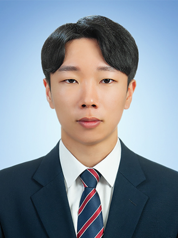

자기소개
저는 맡은 일에 끝까지 책임감을 가지고 열정을 다해 완수해 내는 성실함과 끈기가 저의 장점입니다. 대학시절 여러 가지 프로젝트를 진행하면서 팀원의 입장과 팀장의 입장에서 있어보았습니다. 처음 프로젝트를 했을 당시에 팀원으로써 내가 맡은 역할에 최선을 다해 수행하여 좋은 성적을 거둘 수 있었고, 그 능력을 인정받아 다음 프로젝트에서 팀장으로 추천받아 맡은 일에 책임감을 가지고 노력하여 좋은 성적과 교내 프로그래밍대회에서 상을 받기도 했습니다. 내성적인 저는 새로운 사람들을 만날 때 낯을 가리는 성격이지만 그 만큼 사람들과 가까워지기 위해 스스로가 활발 하려고 노력하고, 상대방의 입장에서 생각해보려고 합니다. 그리고 한번 가까워진 사람과는 우정을 돈독히 하고 신뢰를 주기 위해 상대방의 고민도 들어주고 해결해주려고 노력하며 내가 맡은 일에 대하여 최선을 다합니다.